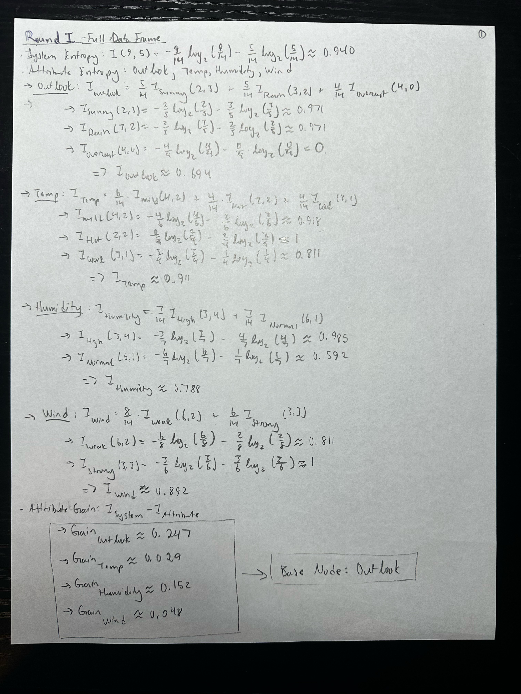
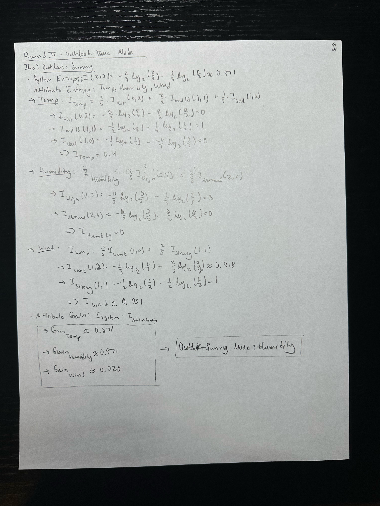
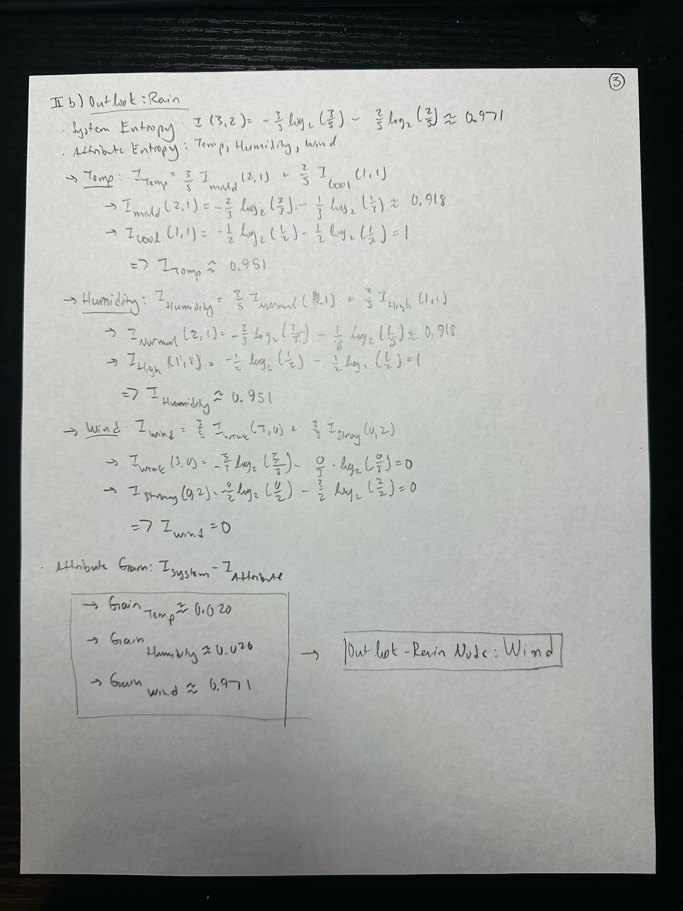
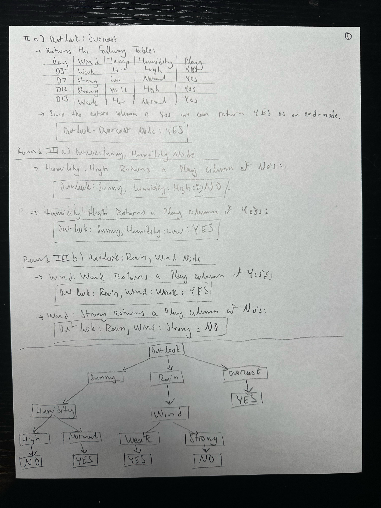
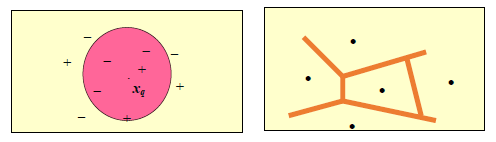
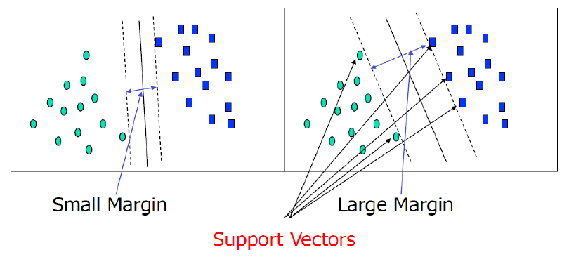
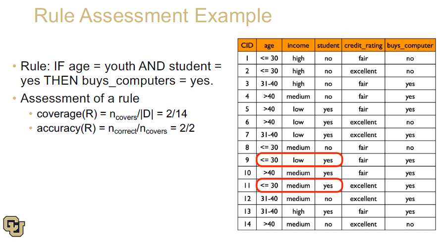
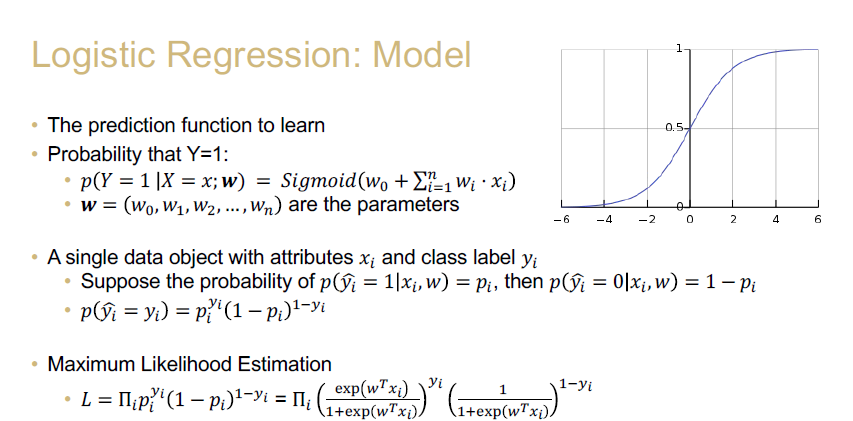

Classification and Regression
Decision Tree Induction
Mostly used in classification, i.e. decision tree classification, and is known as a greedy algorithm.
A flowchart-like tree structure, where each:
- Root Node: the topmost node in a tree
- Internal Node: denotes a test on an attribute
- Branch: represents an outcome of the test
- Leaf Node (terminal node): holds a class label
In splitting attributes:
- Discrete Values: directly
- Continuous Values:
split_point - Discrete Values:
- binary tree
splitting_subset
Attributes are selected at each node based on a heuristic or statistical measure. An attribute selection measure (splitting rules) is a heuristic (enabling someone to discover or learn something for themselves) for selecting the splitting criterion that “best” separates a given data partition of class-labeled training uples into individual classes.
Some common selection measures:
- information gain - Iterative Dichotomiser 3 (ID3): multi-valued attributes
- gain ratio (C4.5): unbalanced splits
- Gini impurity: multi-valued, equal-sized & pure partitions, not great when the number of classes is large
Information Gain
The purer the dataset:
- the less information we need to remember
- the easier we can make predictions
Entropy is to measure the impurity of a dataset.
We call \(p_i = \frac{C_{i,D}}{D}\) the probability that a tuple belong to class \(C_i\), \(m\) that number of classes, and \(v\) are partitions or subsets.
\(Info(D) = - \sum\limits_{i=1}^{m} p_i log_2(p_i)\) (entropy)
\(Info_A(D) = \sum\limits_{j=1}^{v} \frac{|D_j|}{|D|} Info(D_j)\)
\(Gain(A) = Info(D) - Info_A(D)\)
Here’s what this process looks like by hand:




Gain Ratio
Information gain is biased towards tests with many outcomes, to overcome this, gain ratio applied a kind of normalization to information gain.
\(SplitInfo_A(D) = - \sum\limits_{j=1}^{v} \frac{|D_j|}{|D|} log_2(\frac{|D_j|}{|D|})\)
\(GainRatio(A) = \frac{Gain(A)}{SplitInfo_A(D)}\)
Gini Impurity
\(Gini(D) = 1 - \sum\limits_{i=1}^m p_i^2\)
and given \(v\) partitions (\(v=2\) would indicate binary),
\(Gini_A(D) = \sum\limits_{j=1}^v \frac{D_j}{D} Gini(D_j)\)
\(\Delta Gini(A) = Gini(D) - Gini_A(D)\)
Naive Bayesian Classifier (Naives Bayes)
A classifier based on Bayes’ Theorem which uses an incremental approach.
The Theory
Bayes’ Theorem
\(P(H|X) = \frac{P(HX)}{P(X)} = \frac{P(X|H)P(H)}{P(X)}\)
The Classifier
Given
\(P(C_i|X) = \frac{P(X|C_i)P(C_i)}{P(X)}\)
\(P(X)\) is constant for all classes, thus we only need to maximize:
\(\frac{P(X|C_i)P(C_i)}\)
\(\rightarrow P(X|C_i) = \prod_{k=1}^n P(x_k|C_i)\)
Naive Assumption: class conditional independence (no dependence between attributes).
The Zero-Probability Problem (Laplacian Correction)
The prediction requires each conditional probability to be non-zero, if a single \(P(x_k|C_i) = 0 \rightarrow P(X|C_i) = \prod_{k=1}^n P(x_k|C_i) = 0\).
We account for this by applying the Laplacian Correction (Laplacian Estimator), by adding 1 (or a small integer) to each case’s count.
Strengths and Weaknesses
Strengths
- Performance: A naive Bayesian classifier has comparable performance with decision tree and selected neural network classifiers.
- Incremental: Each training example can incrementally increase/decrease the probability that a hypothesis is correct - prior knowledge can be combined with observed data.
Weaknesses
- Assumption: Attributes conditional independence, therefore loss of accuracy.
We can deal with dependencies through Bayesian Belief Networks.
k-Nearest Neighbor
- All instances correspond to points in the n-D space
- The nearest neighbor is defined in terms of Euclidean distance
- Target function could be discrete or real valued
- For discrete valued, k-NN returns the most common value among the k training examples nearest \(x_q\)
- Vonorio diagram: decision surface induced by a 1-NN for a typical set of training examples

- k-NN for real-valued prediction for a given unknown tuple
- returns the mean values of the k-nearest neighbor
- Distance-weighted nearest neighbor algorithm
- weight the contribution of each of the k neighbors according to their distance to the query \(x_q\)
- give greater weight to closer neighbors \(w = \frac{1}{d(x_q, x_i)^2}\)
- Robust to noisy data by averaging k-nearest neighbors
- Curse of dimensionality: distance between neighbors could be dominated by irrelevant attributes
- To overcome it, axes stretch or elimination of he least relevant attributes
Selecting k (the number of neighbors)
- Small k: potential for overfitting (high variance, low bias)
- Big k: potential for bringing too many irrelevant points (low variance, high bias)
Important Information
- lazy method: doesn’t have a learning phase
- non-parametric data: no assumption about data
- outputs labels
- object classified by a plurality vote of its neighbors, with the object being assigned to the class most common among k nearest neighbors (k is positive and normally small)
k-NN Parameters
Since k-NN is relying on the votes neighbors, the parameters are:
- k: how many neighbors
- distance: which distance measure to use
- Minkowski distance (\(L_p\) norm or p-Norm)
- Manhattan distance (\(L_1\))
- Euclidean distance (\(L_2\))
Bias Prevelant within k-NN
- Inductive bias: is the assumption of “nearby means alike” true?
- Distance bias: feature scaling matters
- High-Dimension bias: if there are too many dimensions, every data is far away from all others, the meaning of “neighbor” is not valid anymore
Support Vector Machine (SVM)

Above is a 2-dimensional example of linearly separable data. In n-dimensions, we attempt to separate data with hyperplanes. Specifically, we want to find the maximum marginal hyperplane (MMH), and then set a margin of separation. The sides of the margin are called hyperplanes H1 and H2.
Linearly Separable
SVM turns classification into an optimization problem: find the separating hyperplane with the largest margin possible.
Hard-Margin SVM: an assumption that there is a separating hyperplane.
Soft-Margin SVM: rather than assume the hyperplane separates ALL data points, we assume it separates the MOST data points.
Slack Margin: allows us to move points around to make a separating hyperplane possible.
Linearly Inseparable
When the data is linearly inseparable, we can transform our data into a higher dimension, then search for the optimal linear separating hyperplane in the new space. Compute dot product on the transformed data mathematically equivalent to applying a kernel function to original data.
Overview
- Classification for both linear and nonlinear data
- Transforms data to higher dimensions using nonlinear mapping
- Searches for optimal linear separation hyperplanes in a new dimension
- SVM finds this hyperplane using support vectors (“essential” training tuples) and margins (defined by the support vectors)
Rule-Based Classification
Essentially IF-THEN rules.
Assessment of Rules:
- Coverage
- quantifies the rule’s applicability across the dataset. It’s the fraction of the dataset where the rule is relevant.
- \(coverage(R) = \frac{n_{covers}}{|D|}\)
- Accuracy
- measures the correctness of the rule when it’s applied
- \(accuracy(R) = \frac{n_{correct}}{n_{covers}}\)
Example

Note that rule(s) can be triggered or not. A decision tree is an example of rule-based classification.
Neural Network as a Classifier
Weaknesses
- long training time
- parameters determined empirically
- poor interpretability
Strengths:
- high tolerance to noisy data
- can classify untrained patterns
- well-suited for continuous valued inputs & outputs
- success on a wide array of real-world data
- inherently parallel
- rule extraction
Linear Regression
Mapping from independent attributes to continuous values.
Data: n independent objects
- observed value: \(y_i\), \(i = 1, 2, \dots, n\)
- p-dimensional attributes: \(x_i = (x_{i1}, x_{i2}, \dots, x_{ip})^T\), \(i = 1, 2, \dots, n\)
Model
- weight vector: \(w = (w_1, w_2, \dots, w_p)\)
- \(y_i = w^Tx_i + b\)
The weight vector, \(w\), are bias, \(b\), are the model parameters learned by the data.
Solution
- Least Square Method
- Cost/Loss Function: \(L(w, b) = \sum\limits_{i=1}^n (y_i - wx_i - b)^2\)
- Optimization Goal: \(argmin_{(w, b)} = \sum\limits_{i=1}^n (y_i - wx_i - b)^2\)
- Closed-Form Solution
- \(w = \frac{\sum\limits_{i=1}^n x_i(y_i - \bar{y})}{\sum\limits_{i=1}^n x^2_i - n(\sum\limits_{i=1}^n x_i)^2}\)
- \(b = \frac{1}{n} \sum\limits_{i=1}^n (y_i - wx_i)\)
Logistic Regression
- How we can solve classification problems by regression
- Key Idea: We need to transform a real value Y into a probability value \(\in [0, 1]\)
- Sigmoid Function (differentiable activation function)
- \(\sigma(z) = \frac{1}{1 + e^{-z}} = \frac{e^z}{e^z + 1}\)
- The projected value changes sharply around the zero point
- \(ln(\frac{y}{1-y}) = w^Tx + b\)
